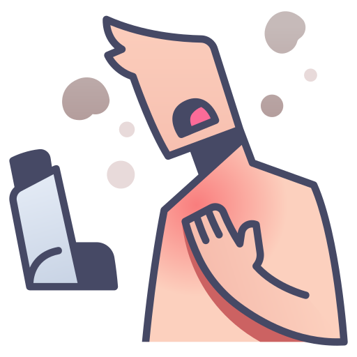
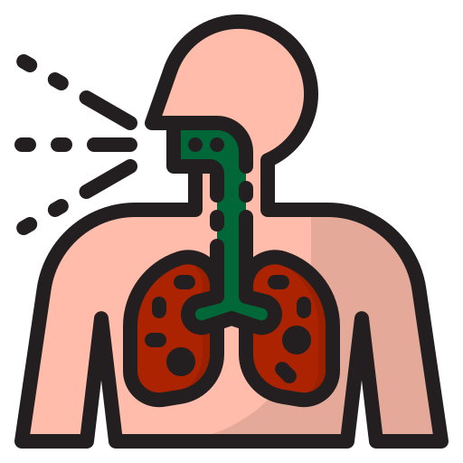
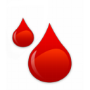

BERHENTILAH MEROKOK!!
KARENA ASAP ROKOKMU
TELAH MEMBUNUH JUTAAN
MANUSIA
 Kanker Paru-Paru |
 Asma |
 Diabetes Tipe 2 |
|
Dimensia Alzeimer |
 Tuberkulosis |
 Menstruasi dan Menopause |
 Kelainan Kelahiran |
 Tulang Yang Lemah |
 Kehilangan Pendengaran |
 Kerusakan Kulit |